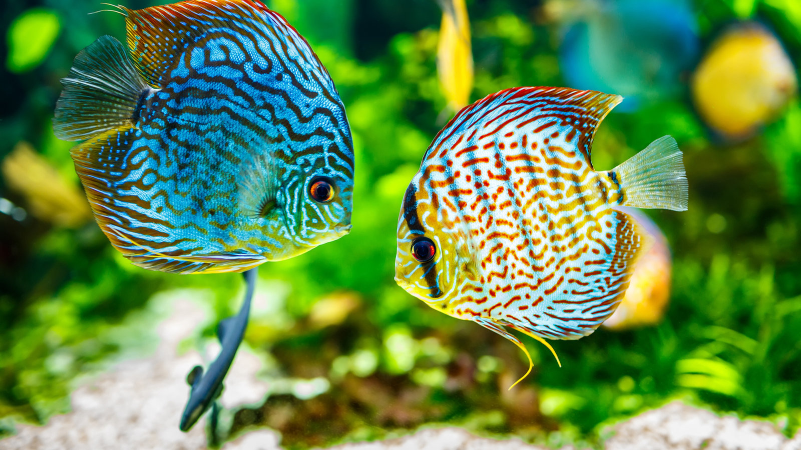

Lead with the reason to visit
Menu, hours, products, services, or inventory should be visible before someone has to scroll or hunt through navigation.
Surface fish, supplies, hours, and specialty knowledge without forcing a site maze. This is a private direction page, not a public redesign.
What we would clean up
Menu, hours, products, services, or inventory should be visible before someone has to scroll or hunt through navigation.
The page title, description, speed, and mobile structure should make Google searchers more likely to click and call.
Flat build, simple hosting, no messy plugin stack, and enough structure to update photos or seasonal details without starting over.
The preview uses the business name, category, current site issue, and available visual material as the starting point.
The full version would turn this direction into a real mobile-first site on a domain they own.